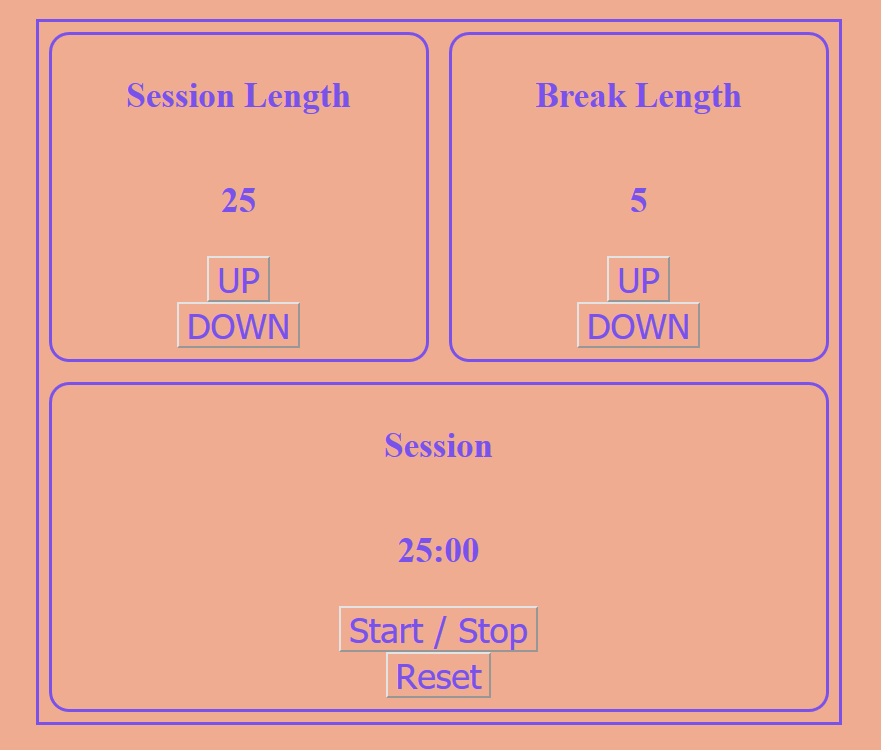

Hello World!
My name is Michael McCoy and I am an aspiring web developer living in Norfolk, Virginia. I have been learning how to code in JavaScript using the freeCodeCamp curriculum. This website is going to serve as a coding portfolio and homebase to document my coding journey!
Contact
Please send any emails to email@michaelmccoy.me and I'll get back to you ASAP! You can also find me at linkedin and github .
Latest Project

This project is a React app that provides a timer for the user to track session and break times for use with the pomodoro technique. The user can set different lengths for the sessions and breaks and the app uses state to count down and automatically switch back and forth.